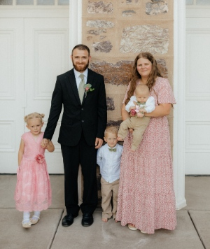

Abbigail Nelson | WDD 130
Hello! My name is Abbigail Nelson and I am from Ogden, Utah. I have four kids, ages ranging from six to two months old. I was born and raised in Utah my whole life. My family has lived in three different cities within Utah. I hope to be able to learn and grow closer to our Heavenly Father. I am currently a student at BYU-Idaho, studying Software Development. I enjoy the outdoors, crafts, and spending time with my family. One of my favorite creative hobbies is needle felting—I love how relaxing and rewarding it is to bring little creations to life with wool. I also enjoy fishing and find peace and joy spending quiet moments by the water, especially with my family. I’m passionate about creating meaningful connections through technology and look forward to using my skills to serve others. Balancing school, family, and faith has been challenging at times, but it has also been incredibly rewarding. I wouldn't be able to get through this program without our heavenly father helping me every step of the way. I love him and hope to improve each and every day like him.